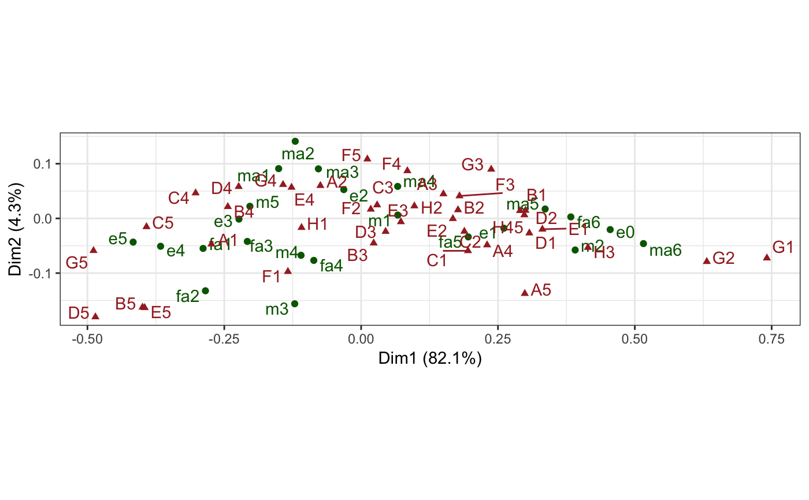
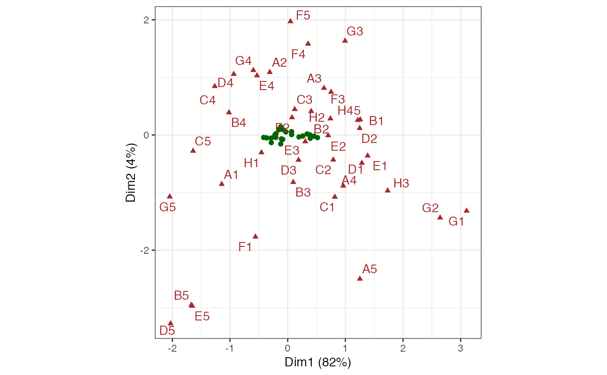

issp_women.RdResponses to several questions about working women and family.
data(issp_women)
A matrix.
Greenacre (2010).
Greenacre MJ (2010) Biplots in Practice. Fundacion BBVA, ISBN: 978-84-923846. https://www.fbbva.es/microsite/multivariate-statistics/biplots.html
# Confer inertia between rows and columns of CA on Spanish ISSP sample data(issp_women) issp_women %>% ca::ca() %>% as_tbl_ord() %>% augment() %>% print() -> issp_ca#> # A tbl_ord of class 'ca': (23 x 22) x (39 x 22)' #> # 22 coordinates: Dim1, Dim2, ..., Dim22 #> # #> # U: [ 23 x 22 | 4 ] #> Dim1 Dim2 Dim3 ... | .name .mass .dist .inertia #> | <chr> <dbl> <dbl> <dbl> #> 1 0.280 0.111 0.830 | 1 m1 0.185 0.0807 0.00120 #> 2 1.64 -1.05 -1.86 ... | 2 m2 0.0272 0.413 0.00464 #> 3 -0.508 -2.84 1.14 | 3 m3 0.00712 0.321 0.000733 #> 4 -0.459 -1.23 0.0111 | 4 m4 0.0109 0.226 0.000558 #> 5 -0.850 0.403 -1.08 | 5 m5 0.103 0.214 0.00471 #> # … with 18 more rows #> # #> # V: [ 39 x 22 | 4 ] #> Dim1 Dim2 Dim3 ... | .name .mass .dist .inertia #> | <chr> <dbl> <dbl> <dbl> #> 1 -1.14 -0.854 -0.892 | 1 A1 0.0236 0.289 0.00197 #> 2 -0.311 1.09 -0.817 ... | 2 A2 0.0553 0.109 0.000651 #> 3 0.629 0.814 0.283 | 3 A3 0.00540 0.333 0.000598 #> 4 0.963 -0.883 1.79 | 4 A4 0.0355 0.255 0.00230 #> 5 1.25 -2.50 0.188 | 5 A5 0.00528 0.409 0.000884 #> # … with 34 more rows# Reproduce Exhibit 9.2 in Greenacre (2010)... issp_ca %>% confer_inertia(c(1, 1)) %>% ggbiplot(aes(label = .name)) + theme_bw() + geom_u_point(color = "darkgreen") + geom_u_text_repel(color = "darkgreen") + geom_v_point(color = "brown", shape = 17) + geom_v_text_repel(color = "brown")#> Warning: Inertias are not balanced.# Reproduce Exhibit 9.3 in Greenacre (2010)... issp_ca %>% confer_inertia("rowprincipal") %>% ggbiplot(aes(label = .name)) + theme_bw() + geom_u_point(color = "darkgreen") + geom_v_point(color = "brown", shape = 17) + geom_v_text_repel(color = "brown")# Reproduce Exhibits 9.4 and 9.6 in Greenacre (2010)...